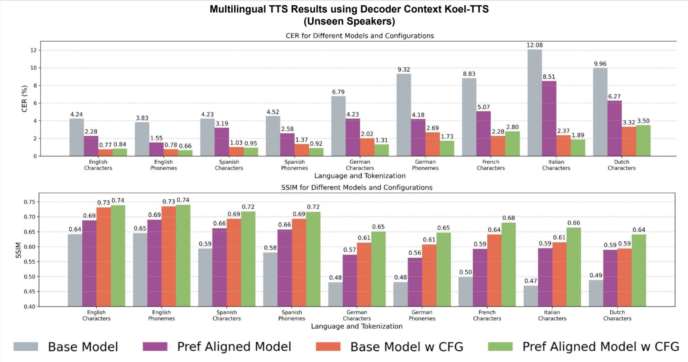
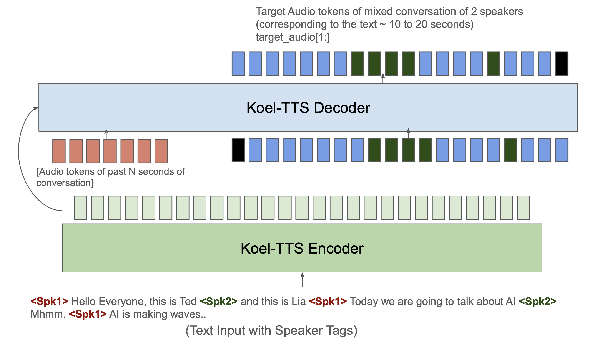

Koel-TTS: Enhancing LLM based Speech Generation with Preference Alignment and Classifier Free Guidance
We present audio examples for Koel-TTS. Koel-TTS is a suite of enhanced encoder-decoder Transformer TTS models,
that address the challenges in autoregressive LLM-based TTS models through preference alignment and classifier free guidance (CFG).
Our experiments demonstrate that these techniques, improve adherence to the conditioning signals, significantly improving audio quality, intelligibility, and speaker similarity.
Notably, Koel-TTS directly maps text and context audio to acoustic tokens, and on the aforementioned metrics, outperforms state-of-the-art TTS models, despite being trained on a significantly smaller dataset.
Koel-TTS Capabilities
In this section, we present audio examples for various capabilities of the Koel-TTS model.
The below audio examples are from the 1.1b Koel-TTS Multilingual model (Decoder context architecture).
The last example is from a fine-tuned model for podcast-style TTS, which we elaborate later in this webpage.
Koel-TTS is capable of various tasks including zero-shot TTS, expressive TTS, multi-lingual and zero-shot cross-lingual TTS,
when conditioned on the appropriate context audio and text.
| Capability |
Text |
Context Audio |
Koel-TTS (Generated Audio) |
Improvements from Preference Alignment and CFG (zero shot TTS on test-clean LibriTTS)
We present audio examples for the zero-shot TTS task considering various Koel-TTS architectures and configurations.
These examples are from the 380m Koel-TTS model, considering the decoder context, multi-encoder, and SV conditioned architectures.
The context audio and texts are from the test-clean subset of the LibriTTS dataset.
We present examples for the base model, base model with CFG inference, preference aligned model and preference aligned model with CFG inference.
As evident from the examples, the base model often struggles with audio quality, intelligibility, and predicting end of sentences.
These issues are significantly alleviated by the preference alignment and CFG inference,
with the best results obtained when both techniques are combined.
Decoder Context Koel-TTS
| Text |
Context Audio |
Base Model |
Base Model + CFG |
Base Model + Pref Alignment |
Base Model + Pref Alignment + CFG |
Multi-encoder Koel-TTS
| Text |
Context Audio |
Base Model |
Base Model + CFG |
Base Model + Pref Alignment |
Base Model + Pref Alignment + CFG |
SV conditioned Koel-TTS
| Text |
Context Audio |
Base Model |
Base Model + CFG |
Base Model + Pref Alignment |
Base Model + Pref Alignment + CFG |
Figure 1: Intelligibility (CER) and speaker similarity (SSIM) evaluations of the base and preference-aligned (RPO) Koel-TTS
architectures, with and without CFG, on zero-shot TTS.
Multi Lingual TTS
In this section, we present audio examples for the zero-shot TTS task in multiple languages.
For this task, we consider the 1.1b Koel-TTS model with the decoder context architecture.
The context audio and texts are from the test set of the CML dataset.
We present examples for the base model and the base model with preference alignment and CFG inference.
As evident from the examples, the base model often struggles with audio quality, intelligibility, and predicting end of sentences.
Similar to the previous section, these issues are significantly alleviated by the preference alignment and CFG inference.
In all of the examples below, the text is tokenized using a separate character tokenizer.
| Text |
Context |
Base Model |
Base Model + Pref Alignment + CFG |
| Text |
Context |
Base Model |
Base Model + Pref Alignment + CFG |
| Text |
Context |
Base Model |
Base Model + Pref Alignment + CFG |
| Text |
Context |
Base Model |
Base Model + Pref Alignment + CFG |
| Text |
Context |
Base Model |
Base Model + Pref Alignment + CFG |

Figure 2: Intelligibility (CER) and speaker similarity (SSIM) evaluations for a decoder-context multilingual TTS model across
various languages and text tokenizers. Both CFG and preference alignment, independently and together, improve CER and SSIM metrics
Podcast-Style TTS
For podcast-style TTS, we fine-tuned the 1.1b Koel-TTS model on a proprietary multi-turn conversational TTS dataset.
To enable this capability, the context audio, text and target triplets (for training and inference) are constructed as follows:
The context audio is the last N seconds of the previous conversation (potentially containing audio from both or one of the speakers).
The text contains the transcript with speaker tags. The target contains audio corresponding to the speaker-tagged transcript.
This is demonstrated in the image below. Such a setup allows us to use the model recursively to generate multi-turn conversational TTS.
We present two examples of such podcast-style TTS below.

Figure 3: Koel-TTS finetuning and inference setup for podcast-style TTS.
The decoder is conditioned on the past 5 seconds of audio. The text input to the model contains speaker tags and the model learns
to switch the voice to the corrsponding speaker tag.
| Transcript |
Koel-TTS (Generated Audio) |